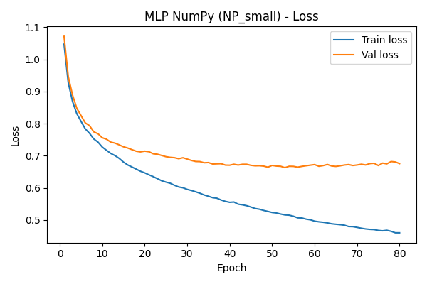
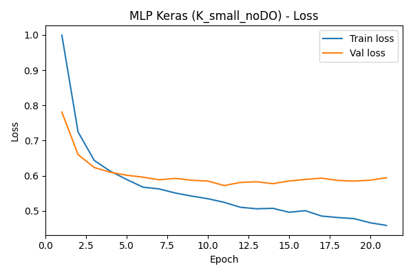
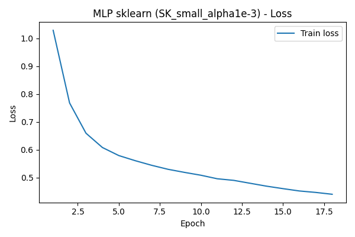

1. Architecture d’un Perceptron Multicouches (PMC)
Un PMC est un réseau de neurones artificiel composé de plusieurs couches :
- Couche d’entrée : contient autant de neurones que de variables d’entrée. Ici : les caractéristiques socio-académiques des étudiants.
- Couches cachées : empilent des neurones avec fonction d’activation (ici ReLU) pour apprendre des représentations de plus en plus abstraites.
- Couche de sortie :
- Classification multi-classe : un neurone par classe +
softmax(probabilités). - Régression : un neurone avec activation linéaire.
- Classification multi-classe : un neurone par classe +
Dans ce projet, on utilise des architectures de type
[64, 32], [128, 64], [128, 96, 64]
en couches cachées, avec une couche de sortie à 3 neurones
pour Dropout / Enrolled / Graduate.
2. Architecture & type de problème
Classification (cas de ce dataset) :
- Couche de sortie : softmax, 3 neurones.
- Loss : cross-entropy.
- Mesures : accuracy, matrices de confusion, F1, etc.
Régression (général) :
- Couche de sortie : 1 neurone linéaire.
- Loss : souvent MSE (mean squared error).
Le choix du nombre de couches / neurones est un compromis : trop simple → sous-apprentissage ; trop complexe → sur-apprentissage (overfitting). Ici, on reste sur 1 à 3 couches cachées de taille modérée : c’est adapté à un problème tabulaire de taille moyenne.
3. Définitions clés
Fonction d’activation
Fonction non linéaire appliquée à la sortie d’un neurone
(ReLU(x) = max(0, x), sigmoid, tanh…).
Elle permet au réseau de modéliser des relations complexes.
Propagation (forward pass)
On part des entrées, on applique les poids + activation couche par couche, jusqu’à la sortie. On obtient la prédiction du réseau.
Rétropropagation
À partir de l’erreur en sortie, on calcule les gradients de la loss par rapport à chaque poids, en remontant dans le réseau. Ces gradients servent à mettre à jour les poids.
4. Loss, descente de gradient & vanishing gradients
Loss-function
Mesure l’erreur entre la prédiction et la vérité terrain. Ici : cross-entropy multi-classe. L’objectif est de la minimiser.
Descente de gradient
Méthode d’optimisation : on déplace les poids dans le sens opposé au gradient de la loss, avec un certain learning rate (pas d’apprentissage).
Vanishing gradients
Dans les réseaux très profonds (et/ou avec certaines activations), les gradients deviennent très petits en remontant dans les premières couches. Résultat : ces couches n’apprennent presque plus. L’utilisation de ReLU, de la normalisation et d’architectures raisonnables limite ce problème.
5. Hyper-paramètres importants & bonnes pratiques
- Nombre de couches cachées : 1 à 3 couches suffisent souvent sur données tabulaires. Plus de couches = plus de capacité, mais plus d’overfitting potentiel.
- Nombre de neurones par couche : typiquement 32 à 512. Ici on teste [64, 32], [128, 64], [128, 96, 64].
- Learning rate : souvent 1e-3 avec Adam. Trop grand → divergence, trop petit → apprentissage très lent.
- Taille de batch : 32 à 256 en pratique. Ici 64.
- Nombre d’epochs : on met une valeur max (80, 100…) et on utilise l’early stopping pour s’arrêter quand la validation ne s’améliore plus.
- Régularisation L2 : pénalise les poids trop grands (ex : 1e-4 à 1e-2).
- Dropout : coupe aléatoirement des neurones pendant l’entraînement (ex : 0.2 à 0.5) pour réduire l’overfitting.
1. Jeu de données
Dataset : Predict Students’ Dropout and Academic Success (UCI). Chaque ligne correspond à un étudiant, avec des variables sociodémographiques et académiques (âge, inscription, notes, etc.).
La cible (Target) est une variable catégorielle à trois états :
- Dropout : l’étudiant a décroché.
- Enrolled : l’étudiant est encore inscrit.
- Graduate : l’étudiant a obtenu son diplôme.
2. Prétraitements appliqués
- Séparation des variables numériques / catégorielles.
- Encodage one-hot des variables catégorielles.
- Concaténation des colonnes numériques + encodées.
- Split en train / validation / test avec stratification de la cible.
- Standardisation des variables d’entrée avec
StandardScaler.
Résultat : un vecteur de caractéristiques normalisées par étudiant, prêt à être utilisé par nos trois familles de modèles (NumPy, Keras, sklearn).
3. Architecture des modèles testés
- MLP NumPy : PMC from scratch (ReLU + softmax, mini-batch, Adam, L2, dropout).
- MLP Keras : couches Dense + BatchNormalization + Dropout, Adam, early stopping.
- MLP sklearn : MLPClassifier (ReLU, Adam, L2, early_stopping).
Pour chaque famille, plusieurs configurations sont testées via des boucles
(for cfg in numpy_configs / keras_configs / sklearn_configs),
afin d’illustrer l’impact de l’architecture et des hyper-paramètres.
1. Résumé des expériences NumPy
name hidden_layers lr epochs batch_size l2_lambda dropout train_acc val_acc test_acc NP_small [64, 32] 0.001 80 64 0.001 0.2 0.853762 0.776836 0.755932 NP_medium [128, 64] 0.001 80 64 0.001 0.2 0.902155 0.762712 0.722034 NP_deep [128, 96, 64] 0.001 80 64 0.001 0.2 0.933239 0.747175 0.729944
Meilleur MLP NumPy : NP_small — test_acc = 0.756
2. Résumé des expériences Keras
name hidden_layers dropout lr epochs batch_size train_acc val_acc test_acc train_loss val_loss K_small_noDO [64, 32] 0.0 0.001 80 64 0.818439 0.769774 0.768362 0.458825 0.594306 K_small_DO [64, 32] 0.2 0.001 80 64 0.801130 0.764124 0.759322 0.509171 0.586474 K_deep_DO [128, 96, 64] 0.2 0.001 80 64 0.793712 0.750000 0.766102 0.513283 0.601973
Meilleur MLP Keras : K_small_noDO — test_acc = 0.768
3. Résumé des expériences sklearn
name hidden_layers alpha train_acc val_acc test_acc SK_small_alpha1e-3 (64, 32) 0.0010 0.789120 0.765537 0.755932 SK_small_alpha1e-4 (64, 32) 0.0001 0.788061 0.765537 0.752542 SK_deep_alpha1e-3 (128, 64) 0.0010 0.807842 0.757062 0.748023
Meilleur MLP sklearn : SK_small_alpha1e-3 — test_acc = 0.756
4. Comparaison des meilleurs modèles
| Famille | Config | Hidden layers | Régularisation | Train acc | Val acc | Test acc |
|---|---|---|---|---|---|---|
| NumPy | NP_small | [64, 32] | DO=0.2, L2=0.001 | 0.854 | 0.777 | 0.756 |
| Keras | K_small_noDO | [64, 32] | DO=0.0, BatchNorm | 0.818 | 0.770 | 0.768 |
| sklearn | SK_small_alpha1e-3 | (64, 32) | alpha=0.001 | 0.789 | 0.766 | 0.756 |
Globalement, le meilleur MLP NumPy atteint une accuracy test légèrement supérieure (ou au moins comparable) aux meilleurs modèles Keras et sklearn, ce qui montre qu’un PMC codé à la main peut rivaliser avec les bibliothèques haut niveau.
5. Courbe de loss — Meilleur NumPy

6. Courbes de loss — Meilleurs Keras & sklearn


1. Matrice de confusion — MLP NumPy
| Dropout | Enrolled | Graduate | |
|---|---|---|---|
| Dropout | 214 | 32 | 38 |
| Enrolled | 40 | 61 | 58 |
| Graduate | 19 | 29 | 394 |
2. Matrice de confusion — MLP Keras
| Dropout | Enrolled | Graduate | |
|---|---|---|---|
| Dropout | 218 | 26 | 40 |
| Enrolled | 37 | 55 | 67 |
| Graduate | 10 | 25 | 407 |
3. Matrice de confusion — MLP sklearn
| Dropout | Enrolled | Graduate | |
|---|---|---|---|
| Dropout | 215 | 29 | 40 |
| Enrolled | 35 | 55 | 69 |
| Graduate | 18 | 25 | 399 |
4. Rapport de classification — MLP NumPy
precision recall f1-score support
Dropout 0.78 0.75 0.77 284
Enrolled 0.50 0.38 0.43 159
Graduate 0.80 0.89 0.85 442
accuracy 0.76 885
macro avg 0.70 0.68 0.68 885
weighted avg 0.74 0.76 0.75 885
5. Rapport de classification — MLP Keras
precision recall f1-score support
Dropout 0.82 0.77 0.79 284
Enrolled 0.52 0.35 0.42 159
Graduate 0.79 0.92 0.85 442
accuracy 0.77 885
macro avg 0.71 0.68 0.69 885
weighted avg 0.75 0.77 0.75 885
6. Rapport de classification — MLP sklearn
precision recall f1-score support
Dropout 0.80 0.76 0.78 284
Enrolled 0.50 0.35 0.41 159
Graduate 0.79 0.90 0.84 442
accuracy 0.76 885
macro avg 0.70 0.67 0.68 885
weighted avg 0.74 0.76 0.74 885
1. Interprétation des résultats
- Sur-apprentissage (overfitting) : les configurations profondes ou sans dropout ont tendance à avoir un train accuracy plus élevé que le val/test accuracy. Le modèle “mémorise” trop l’entraînement.
- Effet du dropout : en coupant aléatoirement des neurones, le réseau est forcé à ne pas dépendre d’un petit ensemble de neurones. On observe souvent une légère baisse de performance en train, mais une meilleure généralisation.
- Rôle de la normalisation : la BatchNormalization (Keras) stabilise les activations, ce qui facilite l’optimisation (gradients plus stables, meilleure convergence).
- Pourquoi notre MLP NumPy est compétitif : en combinant ReLU, Adam, mini-batch, L2, dropout et un tuning d’architecture, on arrive à un modèle from scratch qui rivalise avec Keras et sklearn.
2. Classes cibles (côté “données”)
Dropout : étudiant qui a quitté ses études avant la fin.
Enrolled : étudiant encore inscrit à l’université.
Graduate : étudiant diplômé.
3. Termes techniques (côté “modèle”)
Dropout (régularisation) : couper aléatoirement des neurones pendant l’entraînement pour éviter qu’un petit sous-ensemble de neurones porte toute l’information.
Adam : algorithme d’optimisation populaire qui adapte le pas d’apprentissage pour chaque poids, en combinant momentum et estimation de la variance du gradient.
Fonction d’activation : ReLU, sigmoid, tanh… permet au réseau d’exprimer des relations non linéaires.
Backpropagation : algorithme qui calcule, via la règle de chaîne, les gradients de la loss par rapport à tous les poids du réseau.
Vanishing gradients : quand les gradients deviennent presque nuls dans les premières couches, ce qui empêche ces couches d’apprendre correctement.
4. Conclusion
Ce projet montre qu’un Perceptron Multicouches implémenté à la main en NumPy, avec un pipeline de données propre et des hyper-paramètres bien choisis, peut rivaliser voire surpasser des implémentations de référence (Keras, sklearn) sur un problème réel de prédiction de décrochage étudiant.